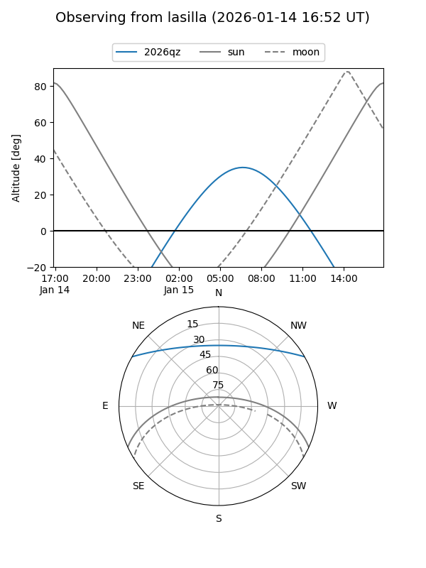
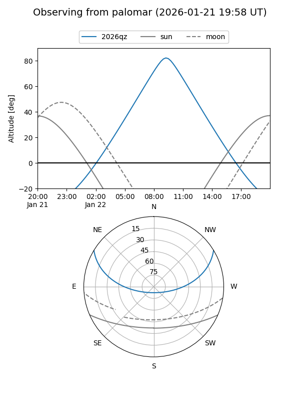
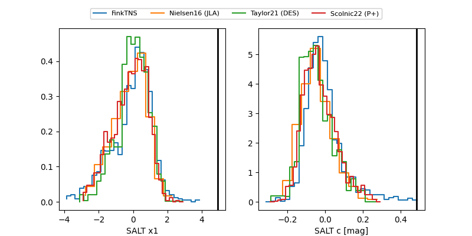

2026qz
Target 2026qz at 2026-01-12 11:05
Aliases and brokers:
FINK: link
Lasair: link
ALeRCE: link
TNS: link
YSE: link
alt names
ZTF26aaapmfm (ztf,fink_ztf)
2026qz (tns,yse)
Coordinates:
equatorial (ra, dec) = 143.3667,+25.80291
equatorial (HMS+DMS) = 09:33:28.00,+25:48:10.48
galactic (l, b) = (202.9286,+45.96606)
Flags:
Photometry:
last ztfr=19.77
1 ztfr detections
Lightcurve

Visibility


Additional plots
